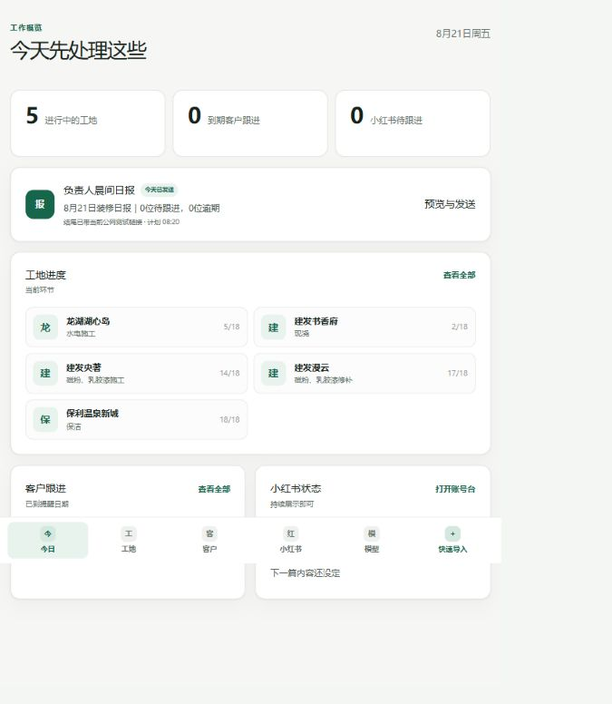
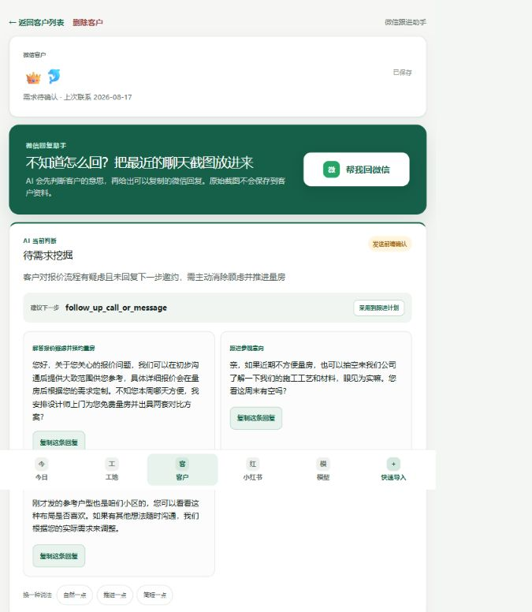

问题从哪里开始
装修业务中，大量核心沟通发生在微信，但聊天记录难以沉淀，这使客户需求、阶段和下一步行动无法被持续追踪。
真正的问题不只是“找不到客户”，更是信息无法持续参与后续决策：
- 01
客户需求容易遗忘，每次沟通前都需要重新翻找历史聊天。
- 02
一些客户在忙碌中被长期搁置，直到很久以后才发现没有继续跟进。
- 03
面对不同阶段的客户，负责人有时知道“该回复”，却不知道下一步应该推进什么。
从聊天整理工具，
到低维护的装修客户跟进系统。
项目从一次“怎么回复客户”开始，后来逐渐转向一个更长期的问题：怎样让客户状态持续被记录、被提醒，并真正进入负责人的日常工作。
装修业务中，大量核心沟通发生在微信，但聊天记录难以沉淀，这使客户需求、阶段和下一步行动无法被持续追踪。
真正的问题不只是“找不到客户”，更是信息无法持续参与后续决策：
客户需求容易遗忘，每次沟通前都需要重新翻找历史聊天。
一些客户在忙碌中被长期搁置，直到很久以后才发现没有继续跟进。
面对不同阶段的客户，负责人有时知道“该回复”，却不知道下一步应该推进什么。
最初，我把问题理解为一次沟通效率问题。因此第一版 FollowUp 的核心很直接：
它解决了一个真实痛点：面对长聊天记录时，不需要重新阅读全部上下文，也可以更快恢复客户需求并组织回复。
建议先确认对方最在意的预算差距，不急着推进成交。
但实际使用后，我发现它只优化了一个沟通瞬间。回复完成之后，这次分析也没有自然进入下一次跟进。
真正频繁发生的问题不是某一次“不知道怎么回复”，而是：这个客户现在进行到哪里了？下一步是什么？什么时候应该再次联系？
因此，产品的核心对象开始发生变化。它不再只保存一次聊天分析结果，而是为每个客户维护一张持续更新的状态卡。
如果仍未回复，先问是否需要调整方案范围。
这意味着产品从一个“聊天整理工具”，逐渐变成了一个客户跟进系统。但新的问题也随之出现。
真实使用中最明显的约束，并不是功能不足，而是维护成本。大约一周内，负责人只新增了 2 个客户状态，并直接反馈维护起来麻烦。日常更多时间在工地、使用手机，连打开工作台也是额外动作。
这让我把产品目标从“增加管理功能”转向“降低信息进入和离开系统的成本”：不是让负责人更认真地维护客户数据，而是尽量让维护这件事消失。
系统目前已经进入真实业务使用阶段，不再只是原型验证。当前版本把客户跟进放进一个更轻的装修运营入口：负责人打开“今日”就能看到到期客户和下一步，也可以在需要时进入客户详情恢复上下文。

当前工地、到期客户和晨间日报集中在一个页面，减少逐个打开客户检查的动作。

最近聊天生成判断和回复草稿后，负责人可以复制回复，也可以把建议采用到跟进计划。
相比单纯统计导入了多少条聊天记录，我更关注这些客户是否能够在数周甚至数月的业务周期中持续被记录和推进。
现在的系统主要解决客户和项目状态。实际装修业务中，公司材料、施工方案、报价历史和项目经验同样依赖人的记忆。
如果这个方向成立，FollowUp 最终可能不只是一套客户跟进工具，而是一个围绕装修业务持续积累上下文的内部运营助手。